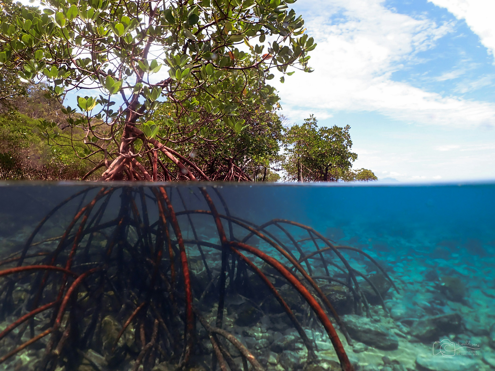
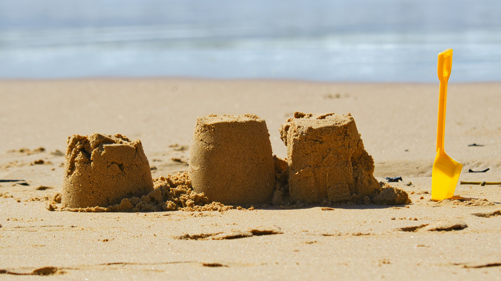
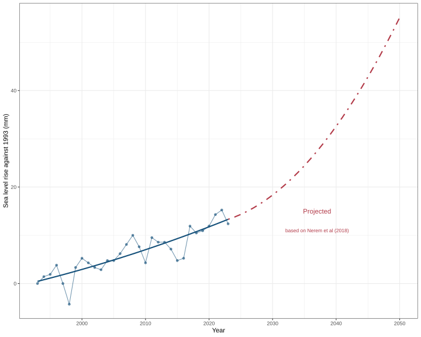

From space, the Pacific Islands are mere pin-pricks. They look extremely vulnerable to rising sea levels.
Scroll down to continue.
Nick Riches. PacificDataViz competition entry, 2026.
A large Pacific archipelago.
Red points show shoreline loss. Blue points show shoreline gain.†
† See this Australian government website for details of the coastline measuring methodology. Data is provided by the Pacific data hub
Land loss is not uniform. In some places the land is growing.
We see erosion on north facing shores and accretion on south facing shores. This may be due to ocean currents.
Let's look at a village called Narikoso.
Coastal erosion has led to evacuation plans. Some families have already been relocated further inland.
One of 40 identified by Fijian government as at risk.
Local news depicted this as a consequence of sea level rises.
Coastal highways have also been eroded.
Sections of the highway have experienced severe erosion.
Again, local news has depicted this as a consequence of sea level rises.
Territory codes
Each point is a Pacific nation.
Size shows population.†
The horizontal axis shows the percentage of the population living within 1km of the coast.†
The vertical axis shows the percentage of reliable coastal observations which show erosion (negative values).
The danger zone is on the
Kiribati, Cook Islands, and Nauru all look precarious.
† Data source for population statistics.
† Data source for coastal proximity
This will now show the mean coastal loss / gain per satellite observation.
Only Papua New Guinea has a negative value.
It is the only nation losing land mass.
And losses are very small.
A survey of atolls finds that those above ten hectares (approximately 14 football pitches) are "robust" to sea level rises (Duvat, 2019).
While coastlines may change, causing localised damage and displacement of villages, the landmass of these islands is not getting smaller.
A survey of Central Pacific islands found that only 21.4% are contracting (Kench et al. 2024).
Large islands are stable due to natural factors, e.g. volcanic bedrock, which ensures that eroded material is redeposited rather than washed out to sea. Larger islands benefit from mangroves which may form a protective barrier.
Human activity may also be at play. On large islands, humans are more likely to dredge and build sea walls.

Fiji's coastlines have been fluctuating for hundreds of years.
Oral histories find examples of villages which relocated due to coastal erosion in the 1950s (Nunn et al. 2026).
Furthermore, as mentioned, most islands in the Pacific are not shrinking.
Individual cases of shoreline erosion cannot be easily linked to climate change.
The data show that large islands are robust to sea level rises.

Sea level projections are alarming (Nerem, 2018)
We are reaching
Warming is accelerating at the
Could this mean an end to the stability of large islands?
Will coastlines experience more frequent and more pronounced fluctations?
